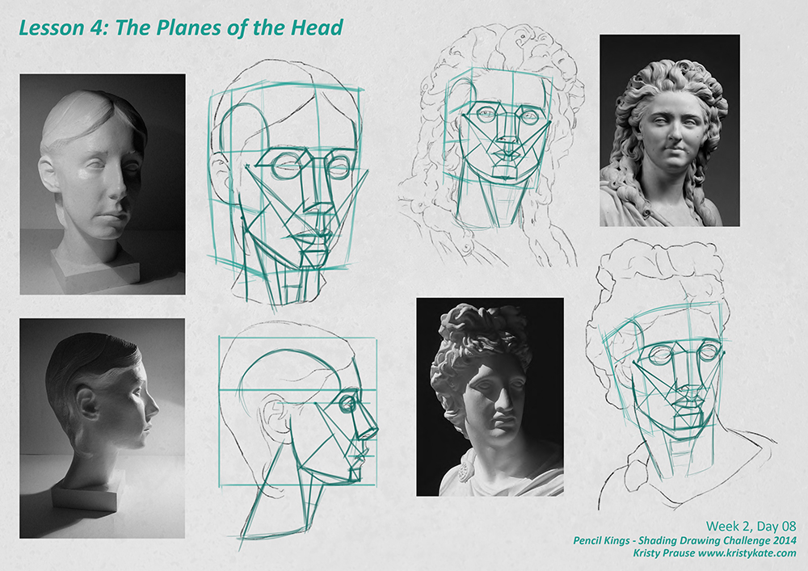
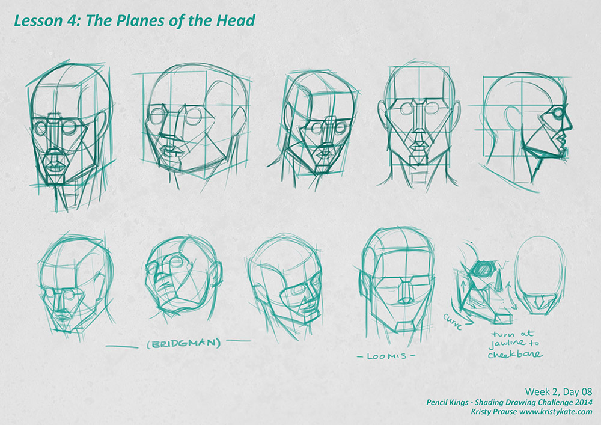
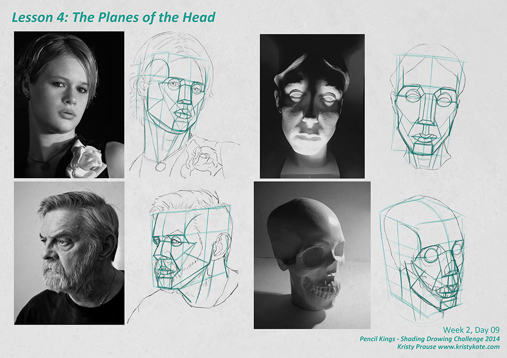
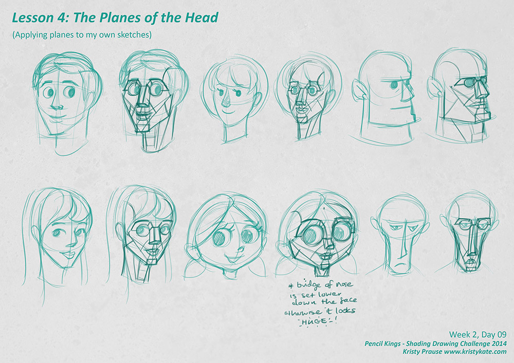

SDC - Learning the Planes of the Head
For the month of September I'm taking part in Pencil Kings Shading Drawing Challenge, with instruction from the lovely Diane Kraus. You can see Diane's work on her website www.dianekraus.com.
This post covers my studies from Lesson 4: The Planes of the Head. My earlier studies can be viewed in the following posts:
* Learning Values with the Shading Drawing Challenge (SDC)
* SDC - Planes and Blocking in the Shadow Value
* SDC - Shading Simple Objects
+ + +
Shading Drawing Challenge - Week 2
Going into Week 2 of the Shading Drawing Challenge, I'm super excited. It was great to revisit the basics, but here is where the real learning and growth begins for me. It's time to jump back into anatomy and learn how to render the human form!
The Planes of the Head
Lesson 4: The Planes of the Head, covered exactly as the title suggests - drawing in the planes of the head. Planes are used to establish the form of an object and act as guidelines for accurate representation of light and shadow. The human face/head is quite a complicated object so learning how to simplify it with planes makes it much easier to tackle in the shading process.
Diane supplied a great step by step video of how to draw the planes, as well as reference images and templates so we could follow along.

However, after completing the first exercises, I felt a little confused as to what exactly I was drawing.
I didn't want to make the mistake of just redrawing what I saw and was told to do. I should be really thinking about what I'm observing, asking questions and coming to a level of understanding of why things appear the way they do.
So I grabbed my Loomis and Bridgman anatomy books (lifesavers!) and made some additional sketches.

As you can see in the image above, I didn't go overboard with sketches. Simply observing different artists' approach to the planes of the head made a huge difference.
I was primarily confused by the diagonal line going from the bottom of the jaw to the area on the cheek. What is it indicating? How is that creating two separate planes?
Looking at Bridgman and Loomis confirmed to me that:
- The diagonal line starts at the base of the jawline and ends at the bottom, outer edge of the cheekbone
- This line indicates the transition of the widest part of the skull (cheekbones and jaw) to the narrowest (chin)
- It also marks the vertical sloping of the cheeks
- Therefore the form of the head turns along the jawline at the point of the bottom of the jaw to the bottom of the cheekbone
- = the change in planes.
Another thing I noticed was that I was being thrown off by the cube that surrounds the head. It's purpose is to help place the head in perspective, learn the proportions (hairline, brow, nose, chin) and be a simple guide to the sides of the head.
If you look at the top row of "boxed" heads in the above image, you'll see that the faces have become flattened against the front side of the cube. So it's worth noting that the features such as the nose and chin can extend past the boundary of the cube and the side of the face doesn't stick to the edges of the cube. The cube is a guide only.
Oh, and a tip on where to place the cube so the edges fit more accurately to the front and side of the face - the cube is the same width as the brows from end to end. The cheekbones do come out a little wider, but note that the rest of the face more closely matches the brow in width.

It was nice to discover that drawing planes actually help with memorizing the placement of facial features too. Little observations such as:
- The outer edge of the nostrils line up with the inner corner (tear ducts) of the eyes.
- The brow line, when drawn around the head, typically touches the top of the ears.
- The bottom of the ears typically line up with the bottom of the nose.
- Drawing lines down from the outer edge of the nostrils define the width of the chin.
- The temple curves away from the outer edge of the brow.
- The top half of the eye socket terminates on the same line as the corners of the eyes.
Simple things, but they really bring together the jigsaw puzzle of the head!
The final exercise was to sketch some heads in our own style and draw the planes over the top:

Under every character sketch lies a creepy robot.
This was such a fantastic exercise for thinking more about the construction of a character's face and how it will function. I was curious how the planes would work on faces with more exaggerated features. To me, it made them more believable. For instance, discovering that the bridge of the chibi-style girl's nose would have to be dropped down, otherwise it would look overly long and broken.
I will have to make a note of this exercise so I can try it again after the challenge ends. You should give it a go too!
Up next, adding some dimension to the planes of the head with SDC Lesson 5: Blocking in the Shadows of the Head.
+ + +
Enjoy art? I'd love to hear from you! Connect with me by leaving a comment or getting in contact via Twitter or Facebook.